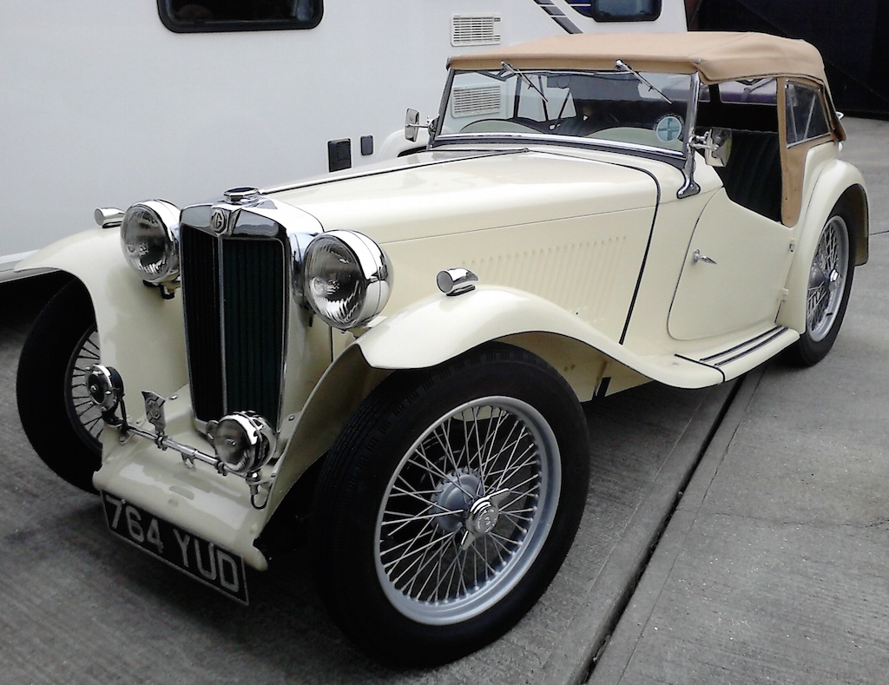
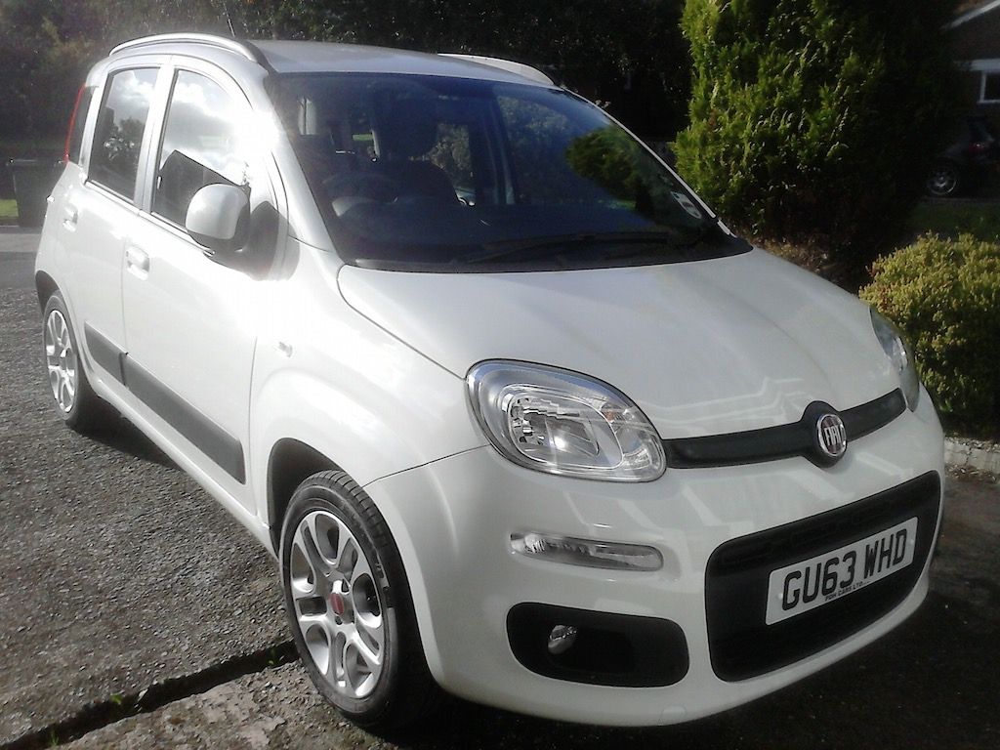
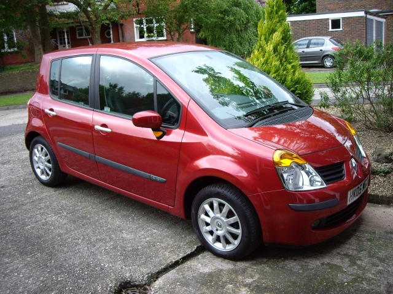
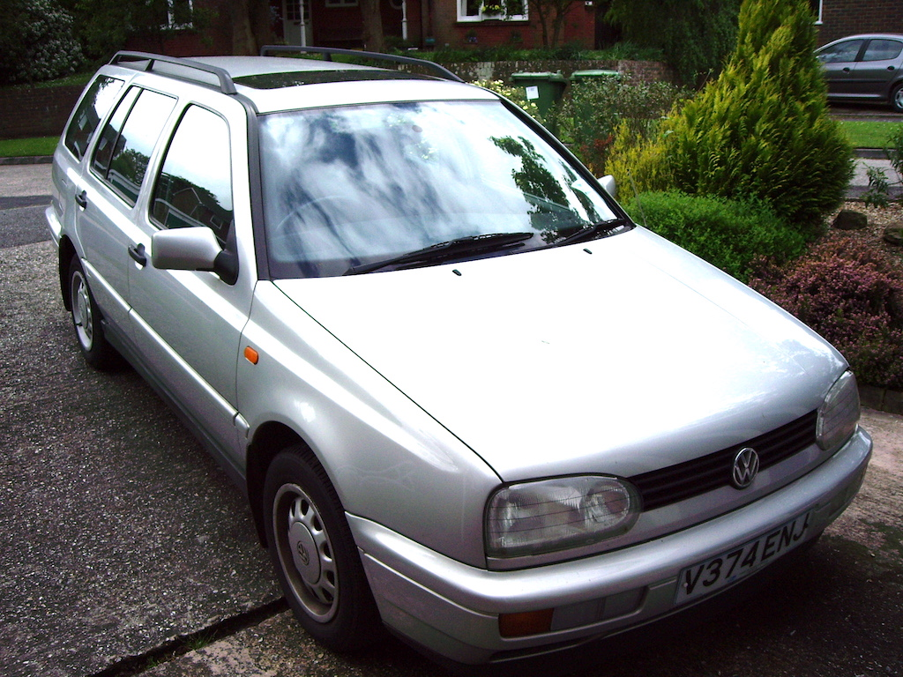
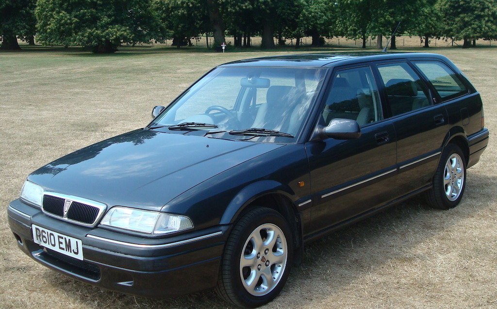
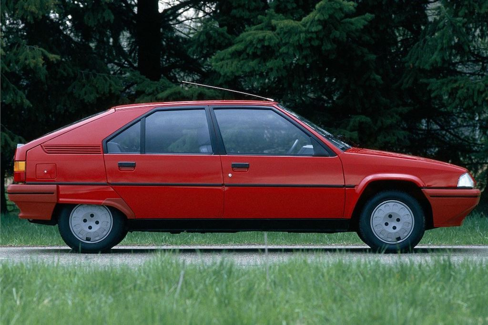
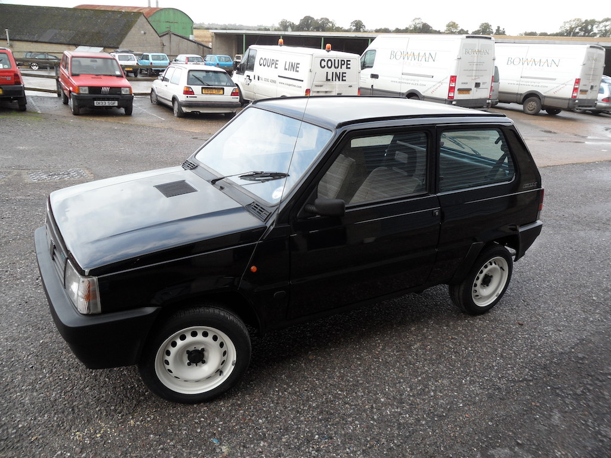

A Range of Vehicles
We don't change our cars very often, but over the years we have owned (or had the use of) quite a few. We don't have records of some of them and don't have photos of the earlier ones, but here is a list as best as we can remember.
| Model | Year | Registration | Owned | Notes | |
|---|---|---|---|---|---|
|  | MG TC | 1948 | 764 YUD | 2015 - | |
|  | Fiat Panda | 2013 | GU63 WHD | 2013 - | |
|  | Renault Modus | 2005 | HK05 WGO | 2006 - 2013 | |
|  | Volkswagon Golf GL Estate | 2000 | V374 ENJ | 2001 - 2006 | |
 | MGF | 2000 | W471 RKJ | 2001 - 2013 | |
 | Volkswagen Polo Estate | 1997 | W471 RKJ | 1998 - 2001 | This is not a photo of our car, but it was the same colour. |
|  | Rover 416 Tourer | 1994 | L987 UKV | 1996 - 1998 | This is not a photo of our car, but it was the same colour. |
|  | Citroen BX | 1991 | J190 UAP | 1991 - 1996 | This is not a photo of our car, but it was the same colour. |
|  | Fiat Panda | 1989 | G108 HAL | 1990 - 2001 | This is not a photo of our car, but it was the same colour (although we didn't have white wheels). |